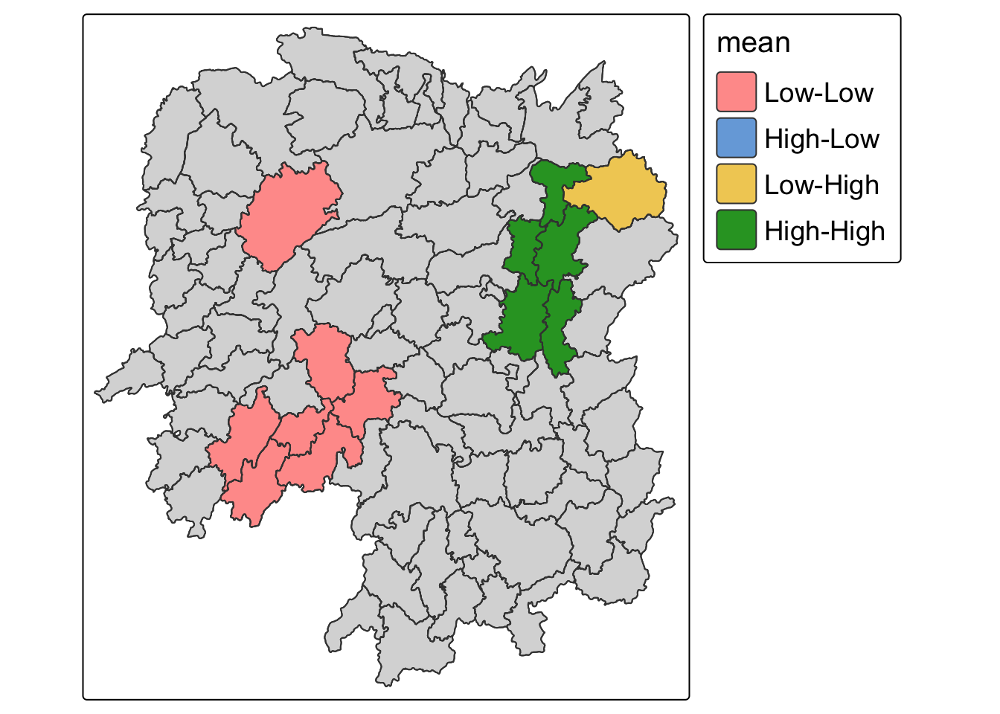
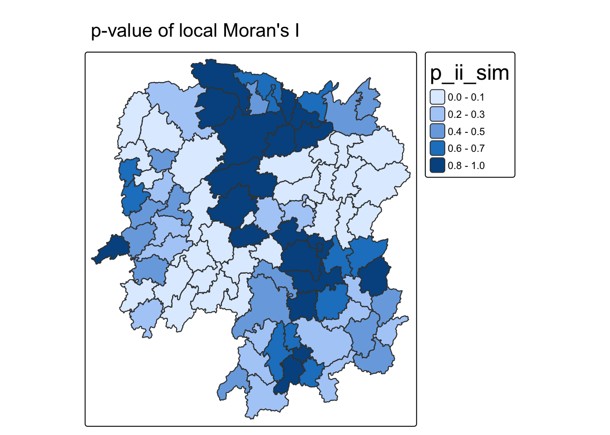
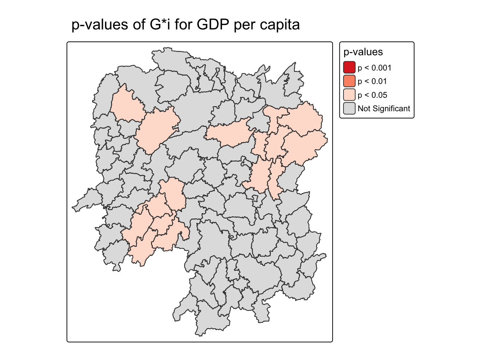

pacman::p_load(sf, sfdep, tmap, tidyverse)Global Measures of Spatial Association
In-class Exercise 5
1 Getting Started
1.1 Setting the Analytical Tools
1.2 Getting the Data Into R Environment
1.2.1 Import shapefile into R environment
hunan <- st_read(dsn = "data/geospatial",
layer = "Hunan",
quiet = TRUE)1.2.2 Import csv file into R environment
hunan2012 <- read_csv("data/aspatial/Hunan_2012.csv",
show_col_types = FALSE)1.2.3 Performing relational join
hunan_GDPPC <- left_join(hunan, hunan2012) %>%
select(1:4, 7, 15)1.3 Step 1: Deriving Queen’s Contiguity Weights
The code chunk below is used to compute the Queen’s contiguity weights. By default, st_contiguity(geometry) uses Queen contiguity. Two polygons are treated as neighbours when they share a boundary or a corner.
wm_q <- hunan_GDPPC %>%
mutate(
nb = st_contiguity(geometry),
wt = st_weights(nb, style = "W"),
.before = 1
)
Note
It is a good practice to review the output datatable after the computation is done. summary(wm_q$nb) reports the number of regions, number of non-zero links, link distribution, and whether any region has no neighbour.
summary(wm_q$nb)Neighbour list object:
Number of regions: 88
Number of nonzero links: 448
Percentage nonzero weights: 5.785124
Average number of links: 5.090909
Link number distribution:
1 2 3 4 5 6 7 8 9 11
2 2 12 16 24 14 11 4 2 1
2 least connected regions:
30 65 with 1 link
1 most connected region:
85 with 11 linksglimpse(wm_q)Rows: 88
Columns: 9
$ nb <nb> <2, 3, 4, 57, 85>, <1, 57, 58, 78, 85>, <1, 4, 5, 85>, <1, 3,…
$ wt <list> <0.2, 0.2, 0.2, 0.2, 0.2>, <0.2, 0.2, 0.2, 0.2, 0.2>, <0.25…
$ NAME_2 <chr> "Changde", "Changde", "Changde", "Changde", "Changde", "Chan…
$ ID_3 <int> 21098, 21100, 21101, 21102, 21103, 21104, 21109, 21110, 2111…
$ NAME_3 <chr> "Anxiang", "Hanshou", "Jinshi", "Li", "Linli", "Shimen", "Li…
$ ENGTYPE_3 <chr> "County", "County", "County City", "County", "County", "Coun…
$ County <chr> "Anxiang", "Hanshou", "Jinshi", "Li", "Linli", "Shimen", "Li…
$ GDPPC <dbl> 23667, 20981, 34592, 24473, 25554, 27137, 63118, 62202, 7066…
$ geometry <POLYGON [°]> POLYGON ((112.0625 29.75523..., POLYGON ((112.2288 2…
Note
st_weights() requires three inputs:
nb: A neighbour list object created byst_contiguity().style: Default"W"for row-standardised weights. Under"W", each county’s neighbour weights sum to 1, making counties with different neighbour counts easier to compare. Other supported coding schemes include"B","C","U","minmax", and"S"."B"uses basic binary coding,"C"is globally standardised,"U"divides"C"by the number of neighbours, and"S"is a variance-stabilising coding scheme.allow_zero: IfTRUE, assigns zero as the lagged value to a zone without neighbours.
1.4 Step 2: Computing Global Moran’s I
In the code chunk below, global_moran() is used to compute Moran’s I value. The three inputs are the numeric variable x, the neighbour list nb, and the weight list wt.
moranI <- global_moran(wm_q$GDPPC,
wm_q$nb,
wm_q$wt)
glimpse(moranI)List of 2
$ I: num 0.301
$ K: num 7.64
Note
The printed I is about 0.301 for this dataset. A positive Moran’s I means neighbouring counties tend to have similar GDPPC values under the selected Queen contiguity and row-standardised weights.
1.5 Performing Global Moran’s I Test
Moran’s I test is used to assess the statistical evidence for global spatial autocorrelation. With sfdep, the test can be performed by using global_moran_test().
moranI_test <- global_moran_test(wm_q$GDPPC,
wm_q$nb,
wm_q$wt)
moranI_test
Moran I test under randomisation
data: x
weights: listw
Moran I statistic standard deviate = 4.7351, p-value = 1.095e-06
alternative hypothesis: greater
sample estimates:
Moran I statistic Expectation Variance
0.300749970 -0.011494253 0.004348351
Note
The default alternative is "greater", so the test checks for positive spatial autocorrelation under randomisation. The report gives the Moran I statistic, expectation, variance, standard deviate, and p-value.
1.6 Performing Global Moran’s I Permutation Test
Monte Carlo simulation is used to perform the statistical test in practice. With sfdep, it is supported by global_moran_perm().
set.seed(1234)
moranI_perm <- global_moran_perm(wm_q$GDPPC,
wm_q$nb,
wm_q$wt,
nsim = 99)
moranI_perm
Monte-Carlo simulation of Moran I
data: x
weights: listw
number of simulations + 1: 100
statistic = 0.30075, observed rank = 100, p-value < 2.2e-16
alternative hypothesis: two.sided
Tip
- Use
set.seed()before simulation to make the computation reproducible. - The simulation count is read with the observed arrangement, so
nsim = 99gives 100 arrangements in the report. observed rankshows where the observed Moran’s I sits within the simulated reference distribution, and the p-value summarises how extreme the observed statistic is under random permutation.
1.7 Interpretation
Under Queen contiguity and row-standardised weights, Hunan county GDPPC shows significant positive global spatial autocorrelation. The result should be reported together with the selected neighbour definition, weighting style, and test method.
1.8 Computing local Moran’s I
In this section,i learnt how to compute local moran’s I of GDPPC at county level by using local_moran() of sfdep package.
lisa <- wm_q %>%
mutate(local_moran = local_moran(
GDPPC, nb, wt, nsim = 99),
.before = 1) %>%
unnest(local_moran)
view(lisa)1.9 Plotting LISA map
We can find three fields contain the LISA categories, they are mean, median and pysal. In general, classification in mean will be used as shown in the code chunk below.
lisa_sig <- lisa %>%
filter(p_ii_sim < 0.05)
tmap_mode("plot")
tm_shape(lisa) +
tm_polygons() +
tm_borders(fill_alpha = 0.5) +
tm_shape(lisa_sig) +
tm_polygons(fill = "mean",
fill.legend = tm_legend(
text.size = 1.15,
width = 6)) +
tm_borders(fill_alpha = 0.4) +
tm_layout(legend.title.size = 1.25)
tmap_mode("plot")
tm_shape(lisa) +
tm_polygons(fill = "p_ii_sim") +
tm_borders(fill_alpha = 0.5) +
tm_title("p-value of local Moran's I") +
tm_layout(legend.title.size = 1.5)
wm_idw <- hunan_GDPPC %>%
mutate(nb = include_self(st_contiguity(geometry)),
wts = st_inverse_distance(nb, geometry,
scale = 1,
alpha = 1),
.before = 1)
HCSA <- wm_idw %>%
mutate(local_Gi = local_gstar_perm(
GDPPC, nb, wts, nsim = 99),
.before = 1) %>%
unnest(local_Gi)tmap_mode("plot")
tm_shape(HCSA) +
tm_polygons(
fill = "p_sim",
fill.scale = tm_scale_intervals(
breaks = c(0, 0.001, 0.01, 0.05, 1.0),
labels = c("p < 0.001", "p < 0.01", "p < 0.05", "Not Significant"),
values = c("#de2d26", "#fc9272", "#fee0d2", "#e0e0e0")),
fill.legend = tm_legend(
title = "p-values")
) +
tm_title("p-values of G*i for GDP per capita") +
tm_borders(fill_alpha = 0.5)